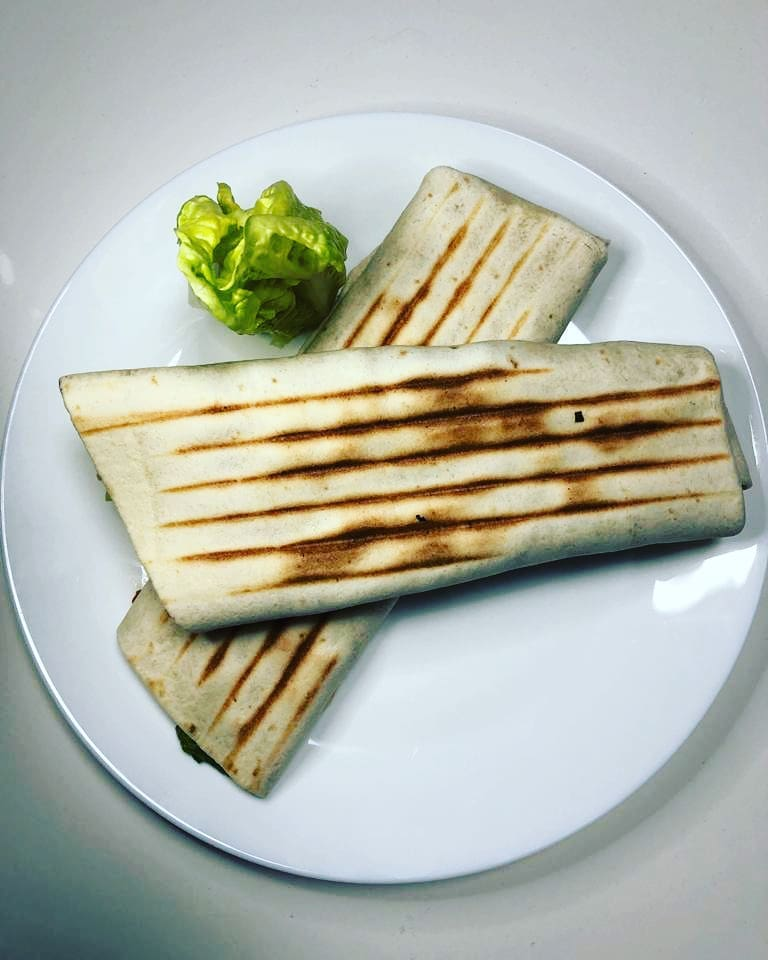

Bylinková omáčka podľa @sefis_peci — Normy Jedál
Může být ?? Kdo by si dal ?
Dnešní domácí tortilla s kuřecím masem a hromadou sýra 😍 Takovou večeři bych mohl každý den
.
.
#tortilla #kurecimaso #maso #kureci #chicken #chickentortilla #salat #zelenina #vegetable #sos #omacka #bylinkovaomacka #chilly #chillytortilla #panini #chickenpanini #grill #grillovers #homemade #home #homesweethome #domaci #domacivyroba #milujemevareni #varimeslaskou #fotimejidlo #jidlo #zelena #mnami #tochci